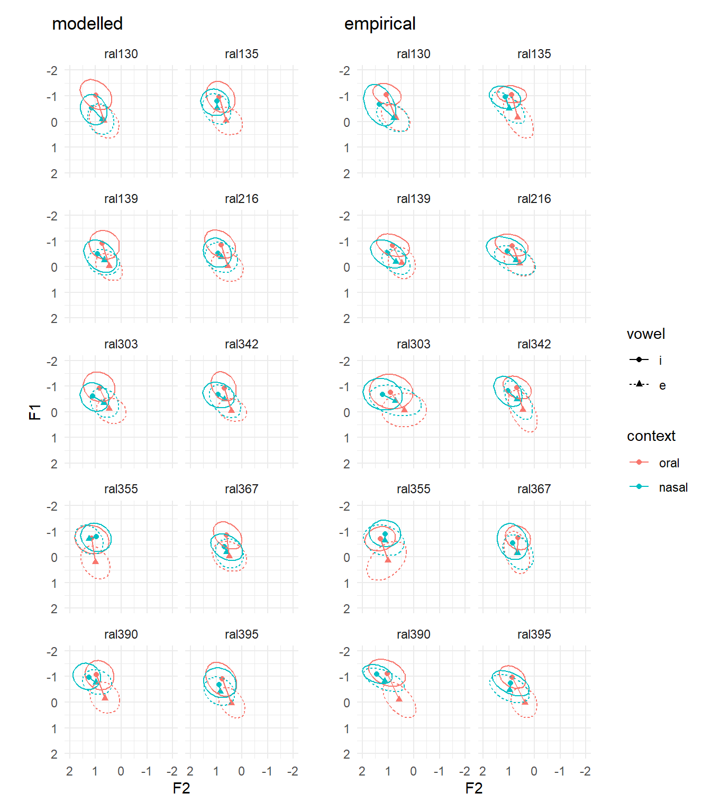
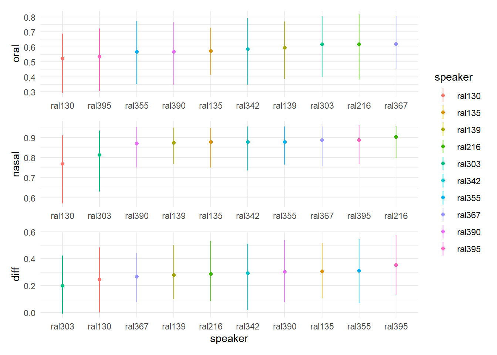
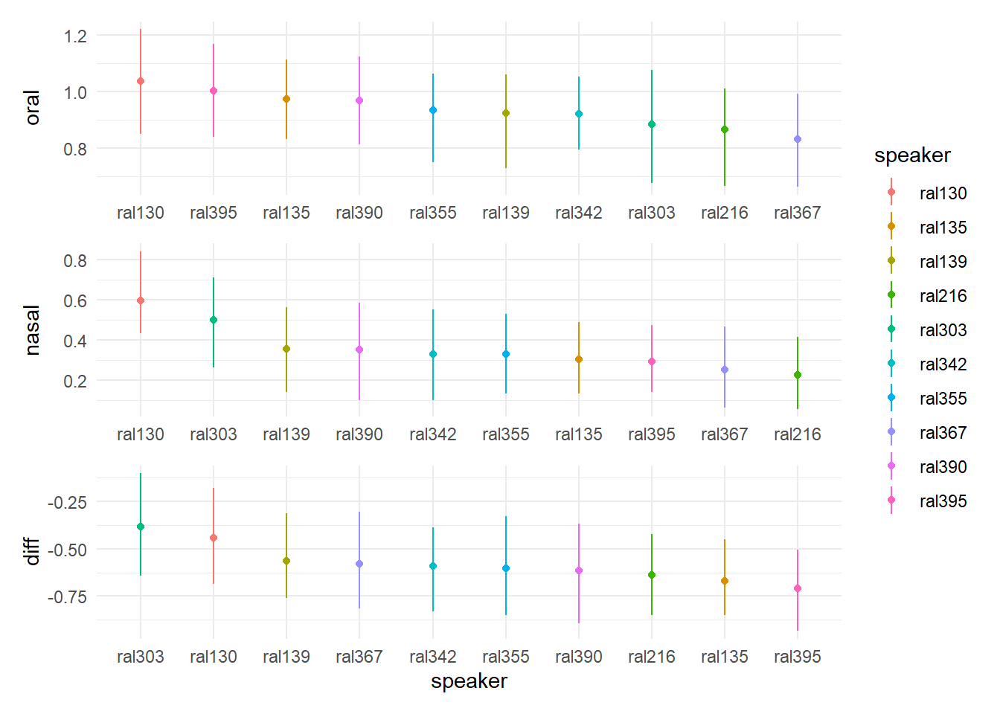

library(brms)
library(tidybayes)
library(adehabitatHR)
library(tidyverse)MMO Tutorial
Introduction
To skip ahead to running code, go to the next section.
This tutorial is meant to accompany Smith, Sonderegger, and Spade Consortium (2024) (preprint), which describes a new method for calculating vowel merger: Modelled Multivariate Overlap (MMO). The application discussed in the paper and shown in this tutorial is the PIN-PEN merger (Labov, Ash, and Boberg 2006). We operationalize the degree of merger between two vowels as the amount of distributional overlap in F1 / F2 space between those two vowels. While the paper and the tutorial both focus on vowel merger, the method applies more generally to quantifying the overlap between distributions of any kind, including distributions in more than 2 dimensions1. Additionally, this method is flexible in that it can be applied for any measure of overlap that can be calculated from empirical distributions. Here, we show the method applied to calculate Bhattacharyya affinity and Euclidean distance, but it could also be used to calculate Pillai or scores any of the other methods described in Nycz and Hall-Lew (2014) or Kelley and Tucker (2020).
The steps for calculating MMO are outlined below. For more details, see Smith, Sonderegger, and Spade Consortium (2024). The steps are written for the PIN-PEN merger application that is carried throughout this tutorial, so “F1,” “F2,” “vowel,” and “context” might be different quantities in your specific application.
- Preprocessing
- Likely includes some form of normalization of F1 and F2 , so that overlap measures are comparable across speakers
- After normalization, we discard all vowels except for the two that are interest here: /ɪ/ and /ɛ/
- In addition to these two steps, you can do whatever data cleaning or transformations you like, such as centering and scaling predictors, or eliminating problem tokens
- Modelling: Fit a multivariate model to jointly predict F1 and F2.
- Bayesian multivariate modelling is an extremely convenient way to implement MMO, because it directly models distributions
- If you have another way to generate a modelled distribution, go for it
- If fitting Bayesian models is intimidating for you, the code for fitting a model in
brmsthat is included here, along with basic knowledge oflmer-style model syntax, should be enough to get you fitting your own Bayesian models - The Interspeech2024 subfolder of this repository has examples of more complex
brmsmodels, specifically, with modelled variance and nested random effects structures
- Simulation: Using the model that was fit in Step 2, simulate tokens of each vowel
- Vary or hold constant other variables as appropriate
- For example, for the PIN-PEN merger,
context(prenasal or preoral) needs to be accounted for, so we simulate tokens for eachvowel-by-contextpair - If
durationandspeaker genderwere included as model predictors, then it might make sense to holddurationconstant (for example, at its average value across all tokens of all speakers) and to setspeaker genderto the appropriate value for each speaker
- For example, for the PIN-PEN merger,
- Simulations can be made either for each individual speaker, or for the “average” speaker
- Below, we show how to make both of these kinds of simulations using the
tidybayespackage
- Overlap calculation: Now that you have simulated an empirical distribution, you can calculate any measure of overlap you like.
- This tutorial shows how to calculate Bhattacharyya affinity and Euclidean distance
Finally, this tutorial is designed such that it can reasonably be run locally on a personal computer. The most resource-intensive step is fitting the Bayesian model: if this is too much for your computer, you can reduce the dataset even further than shown here. After fitting the model once, the brm line will read the file instead of fitting the model, and spare your computer the need to re-fit the model from scratch.
It is possible that, if you are fitting models on corpus data, you will need a more powerful computer than your personal computer. Making model predictions and calculating Bhattacharyya affinity can also be very resource-intensive, so I would also recommend calculating those externally and saving the output. The Interspeech2024 folder has examples of scripts for doing this.
Packages
The following packages were used to carry out the core parts of the analysis:
brms(Bürkner 2018) is used to fit the Bayesian model. It usesRStan(Stan Development Team, n.d.), which needs to be manually installed. Instructions for installingRStancan be found here. OnceRStanis installed,brmscan simply be installed usinginstall.packages("brms")(more information here).tidybayes(Kay 2020) is used to get model predictions and to summarize model predictions.adehabitatHR(Calenge 2006) is the package used to compute Bhattacharyya affinity. The code below is adapted from Joey Stanley’s tutorial.tidyverseis used forggplot2anddplyrfunctionality.
For visualizing results, we use the following libraries:
patchworkto help arrangeggplot2plotskhromafor extra color palettes
library(patchwork)
library(khroma)
# set global plot theme to theme_minimal
theme_set(theme_minimal())Data
We’ll be using the Raleigh corpus (Dodsworth and Benton 2020) from the SPADE project (Sonderegger et al. 2022), available on OSF. The data has been Lobanov normalized (Lobanov 1971) and subsetted to include stressed tokens of /ɪ/ and /ɛ/ from 10 speakers. To see the preprocessing details, look at the script create_tutorial_dataset.R.
raleigh_data <- readRDS("data/Raleigh_subset.rds")
head(raleigh_data)# A tibble: 6 × 6
# Groups: speaker [1]
speaker vowel context word F1 F2
<chr> <fct> <fct> <chr> <dbl> <dbl>
1 ral135 e oral BET -0.377 1.29
2 ral135 i oral IT -0.962 0.429
3 ral135 i nasal IN -1.33 0.936
4 ral135 i oral IT -1.19 0.910
5 ral135 i nasal IN -0.761 1.96
6 ral135 i oral IS -1.21 0.368There is currently too much data to fit the model on my computer, so we randomly pick 50 tokens of each vowel-by-context pair for each speaker. If you’re still having trouble fitting a model, you could try sampling even fewer tokens.
# set seed so that code is replicable
set.seed(22)
raleigh_data_50 <- raleigh_data %>%
group_by(speaker, context, vowel) %>%
slice_sample(n=50) %>%
ungroup()Exploratory plots
This section is not strictly necessary. To skip ahead, go to Model Fitting.
Let’s make some exploratory plots to set up our expectations.
First, let’s just start with looking at the vowel-by-context distributions in F1 / F2 space for each speaker.
If you want, you can change the vowel labels to their IPA symbols by mutating the vowel column before passing the data to ggplot. I’ll do this once to demonstrate, but in the remaining plots, ‘/ɪ/’ and ‘/ɛ/’ will show up as ‘i’ and ‘e’.
raleigh_data %>%
mutate(vowel=factor(vowel, levels=c('i', 'e'), c('/ɪ/', '/ɛ/'))) %>%
ggplot(aes(x=F2, y=F1, color=context)) +
stat_ellipse(level=0.66, aes(lty=vowel)) +
scale_x_reverse() + scale_y_reverse() +
coord_cartesian(xlim=c(2, -2), ylim=c(2, -2), clip='off') +
facet_wrap(~speaker) +
theme(aspect.ratio=1)
Let’s look at each speaker’s category center on the same graph. The lines connecting the centers represent the Euclidean distance between vowel for each context (prenasal and preoral).
raleigh_data %>%
group_by(speaker, vowel, context) %>%
summarize(across(c(F1, F2), mean)) %>%
ungroup() %>%
ggplot(aes(x=F2, y=F1, color=context, shape=vowel)) +
stat_ellipse(data=raleigh_data, level=0.66, aes(lty=vowel)) +
geom_point() +
geom_line(aes(group=interaction(context, speaker))) +
scale_x_reverse() + scale_y_reverse() +
coord_cartesian(xlim=c(2, -2), ylim=c(2, -2), clip='off') +
facet_wrap(~speaker) +
theme(aspect.ratio=1)
The average (across speakers) effect of context on vowel for both F1 and F2.
p_av_F1 <- raleigh_data %>%
# give all speakers equal weight
group_by(speaker, vowel, context) %>%
summarize(F1=mean(F1)) %>%
ungroup() %>%
# now average all speakers together
group_by(vowel, context) %>%
summarize(F1=mean(F1)) %>%
ungroup() %>%
ggplot(aes(x=vowel, y=F1, color=context, fill=context)) +
geom_point(show.legend=FALSE) +
geom_line(aes(group=context)) +
scale_y_reverse()
p_av_F2 <- raleigh_data %>%
# give all speakers equal weight
group_by(speaker, vowel, context) %>%
summarize(F2=mean(F2)) %>%
ungroup() %>%
# now average all speakers together
group_by(vowel, context) %>%
summarize(F2=mean(F2)) %>%
ungroup() %>%
ggplot(aes(x=vowel, y=F2, color=context, fill=context)) +
geom_point(shape=24, show.legend=FALSE) +
geom_line(lty=2, aes(group=context), show.legend=FALSE) +
scale_y_reverse()
p_av_F1 + p_av_F2 + plot_layout(guides='collect')Now we can make the same plot but with each individual speaker’s interactions:
p_F1_sp_emp <- raleigh_data %>%
group_by(speaker, vowel, context) %>%
summarize(F1=mean(F1)) %>%
ungroup() %>%
ggplot(aes(x=vowel, y=F1, color=context, fill=context)) +
geom_point(shape=21, show.legend=FALSE) +
geom_line(lty=1, aes(group=interaction(context, speaker))) +
scale_y_reverse()
p_F2_sp_emp <- raleigh_data %>%
group_by(speaker, vowel, context) %>%
summarize(F2=mean(F2)) %>%
ungroup() %>%
ggplot(aes(x=vowel, y=F2, color=context, fill=context)) +
geom_point(shape=24, show.legend=FALSE) +
geom_line(lty=2, aes(group=interaction(context, speaker)), show.legend=FALSE) +
scale_y_reverse()
p_F1_sp_emp + p_F2_sp_emp + plot_layout(guides='collect')
Model fitting
We are going to fit a simple multivariate Bayesian model (similar to the “minimal” model in our Interspeech paper (Smith, Sonderegger, and Spade Consortium 2024)). For more model syntax examples (including more complex model structures, such as nested random effects, modelling variance, and predictors with nonlinear effects), see the model-fitting scripts in the Interspeech folder of the github repository.
The model we are fitting jointly models F1 and F2, which is a key feature of the method we’re proposing. The remainder of the model structure is quite simple. The fixed predictors are context, vowel, and their interaction. There are by-word and by-speaker random intercepts, and by-speaker random slopes of of vowel, context, and their interaction.
# "p" and "q" are just dummy variables and can be anything
F1 = bf(F1 ~
context*vowel +
(1|p|word) + (1+context*vowel|q|speaker))
F2 = bf(F2 ~
context*vowel +
(1|p|word) + (1+context*vowel|q|speaker))
model <- brm(F1 + F2 +
# set_rescor(TRUE) means that correlations between F1 & F2
# will be modelled.
set_rescor(TRUE),
# we want to use the smaller dataset so it doesn't take
# forever to fit
data=raleigh_data_50,
# fitting a gaussian model (more details below): this is the
# default, but I'm making it explicit here for pedagogical
# purposes
family=gaussian,
# if this file exists, this call will just read in the file.
# Otherwise, the call will save the model here.
file="tutorial_model",
# Set prior for correlations. All other parameters just use
# default priors.
prior = c(prior(lkj(1.5), class = cor)),
# my computer has 8 cores, so I'm using 4 here, change
# according to your own machine. Ideally, you want to use the
# same number of cores as chains, so that all the chains can
# run in parallel.
chains=4, cores=4,
# If there are warnings, consider increasing the number of
# iterations.
iter = 4000)The key difference between a Bayesian model (like the one we just fit) and a frequentist model (which we could fit with very similar model syntax in lmer) is that the Bayesian model is modelling the distributions of the output variables, whereas frequentist models fit a point prediction. While I am not here to take an ideological stance, the fact that Bayesian models inherently predict distributions is extremely useful for the present application.
Simulate distributions
To understand more about what exactly “drawing from the model” is doing, check out the tidybayes help page.
Using tidybayes, we can simulate draws of the parameters (using add_epred_draws) or of the data (using add_predicted_draws). Which one you choose to do should be determined by the quantity you want to compute from the predictions. We’ll show both in this tutorial, because the two measures of overlap that we will be calculating (Bhattacharyya affinity and Euclidean distance) necessitate different kinds of predictions.
First, we need to know what parameter values to predict for. For our application, we at least want to get predicted values for each combination of vowel and context. Because we have by-speaker random intercepts with vowel-by-context random slopes, we can make predictions for each speaker-by-vowel-by-context pair. We can also make predictions for the “average” speaker by discarding the entire random effects structure. We will do both. (All of the analysis is done for the “average” word, i.e., the by-word random intercepts are always ignored. Looking at lexical effects would open a whole new set of possible research questions, so be my guest if this is of interest.)
Additionally, we also want to make “average” speaker predictions, so we’ll just ignore the random effects structure entirely, i.e., predict F1 and F2 as a function of just vowel and context.
Let’s make a dataframe with every combination of vowel and context: these are what we use to make the “average” speaker simulations. You unfortunately need to reset the factor levels, since the levels() function (not to be confused with the levels argument to the factor() function) makes a vector of character strings and not factors.
# these are both vectors of characters, but their order is determined by the
# order in the model
vowel_levels <- levels(model$data$vowel)
context_levels <- levels(model$data$context)
av_preds <- expand_grid(context = factor(context_levels,
levels=context_levels),
vowel = factor(vowel_levels,
levels=vowel_levels))
head(av_preds)# A tibble: 4 × 2
context vowel
<fct> <fct>
1 oral i
2 oral e
3 nasal i
4 nasal e Similarly, let’s make a dataframe with every combination of speaker, vowel, and context. We use this one to make all of our by-speaker simulations.
sp_preds <- expand_grid(context = factor(context_levels,
levels=context_levels),
vowel = factor(vowel_levels,
levels=vowel_levels),
speaker = unique(model$data$speaker))
head(sp_preds)# A tibble: 6 × 3
context vowel speaker
<fct> <fct> <chr>
1 oral i ral130
2 oral i ral135
3 oral i ral139
4 oral i ral216
5 oral i ral303
6 oral i ral342 We’ll also define two variables: num_draws, which is the number of draws to take, and num_points, which is the number of points per draw to take for calculating Bhattacharyya affinity. You can change these to smaller numbers if your computer is struggling, or to bigger numbers if you have the resources. I would in particular recommend changing num_points if you want better estimates of Bhattacharyya affinity.
num_draws=100
num_points=25Now, let’s make our first simulations. Here, we are making by-speaker predictions for the F1 and F2 means as a function of context and vowel. The resulting distribution is the posterior for the means of the data, not the distributions for the data itself. This is what we want in order to compute Euclidean distance.
When computing Euclidean distance from empirical distributions, we get the distribution center by averaging across tokens, but that isn’t necessary if we are predicting from the model because we already have a distribution of the estimate for the mean from the model we fit! We still take multiple draws of the mean, because that allows us to calculate credible intervals later on.
fitted_sp <- sp_preds %>%
add_epred_draws(model,
# include only the part of the random effects that we're
# interested in
re_formula = ~(1+context*vowel| q|speaker),
ndraws=num_draws) %>%
ungroup() %>%
# pivot so that F1 and F2 each get a column
pivot_wider(names_from=".category", values_from=".epred") %>%
# we never use the `.row`, `.chain`, or `.iteration` columns, so let's get rid
# of them
dplyr::select(-.row, -.chain, -.iteration)
head(fitted_sp)# A tibble: 6 × 6
context vowel speaker .draw F1 F2
<fct> <fct> <chr> <int> <dbl> <dbl>
1 oral i ral130 1 -1.00 1.03
2 oral i ral130 2 -0.986 1.03
3 oral i ral130 3 -1.00 1.00
4 oral i ral130 4 -0.964 0.944
5 oral i ral130 5 -0.962 0.971
6 oral i ral130 6 -1.10 1.03 Now we do the exact same thing, but this time, we exclude the random effects in order to draw from the distribution of the means for the average speaker.
fitted_av <- av_preds %>%
add_epred_draws(model,
# re_formula, needs to be NA (which keeps it empty), rather
# than NULL, which is the "default," i.e., complete random
# effects structure (including by-word random effects)
re_formula=NA,
ndraws=num_draws) %>%
ungroup() %>%
pivot_wider(names_from=".category", values_from=".epred") %>%
dplyr::select(-.row, -.chain, -.iteration)
head(fitted_av)# A tibble: 6 × 5
context vowel .draw F1 F2
<fct> <fct> <int> <dbl> <dbl>
1 oral i 1 -0.946 0.929
2 oral i 2 -0.883 0.895
3 oral i 3 -0.921 0.893
4 oral i 4 -0.905 0.773
5 oral i 5 -0.858 0.757
6 oral i 6 -0.892 0.819Each row in fitted_sp and fitted_av should be interpreted as a possible value of the mean. Because we have 100 such values, we can use this variation to estimate our uncertainty in an estimate of the mean (or of any quantity calculated from these dataframes).
Now, instead of simulating the means, let’s simulate the data. For this, we use add_predicted_draws, but aside from that, the procedure is the same as above. Here, we’re not actually using these two dataframes to calculate a measure of overlap, but these are the dataframes that are directly comparable to the empirical distributions, so we do want to look at them.
predicted_sp <- sp_preds %>%
add_predicted_draws(model,
re_formula = ~(1+context*vowel|q|speaker),
ndraws=num_draws) %>%
ungroup() %>%
pivot_wider(names_from=".category", values_from=".prediction") %>%
dplyr::select(-.row, -.chain, -.iteration)
head(predicted_sp)# A tibble: 6 × 6
context vowel speaker .draw F1 F2
<fct> <fct> <chr> <int> <dbl> <dbl>
1 oral i ral130 1 -0.658 1.39
2 oral i ral130 2 -0.751 0.975
3 oral i ral130 3 -0.514 0.264
4 oral i ral130 4 -1.21 0.894
5 oral i ral130 5 -0.695 0.713
6 oral i ral130 6 -1.33 1.09 predicted_av <- av_preds %>%
add_predicted_draws(model,
re_formula=NA,
ndraws=num_draws) %>%
ungroup() %>%
pivot_wider(names_from=".category", values_from=".prediction") %>%
dplyr::select(-.row, -.chain, -.iteration)
head(predicted_sp)# A tibble: 6 × 6
context vowel speaker .draw F1 F2
<fct> <fct> <chr> <int> <dbl> <dbl>
1 oral i ral130 1 -0.658 1.39
2 oral i ral130 2 -0.751 0.975
3 oral i ral130 3 -0.514 0.264
4 oral i ral130 4 -1.21 0.894
5 oral i ral130 5 -0.695 0.713
6 oral i ral130 6 -1.33 1.09 We need to make special dataframes for the Bhattacharyya affinity calculations because we want to be able to calculate uncertainty. Bhattacharyya affinity is calculated by first estimating the underlying distribution of the data and therefore takes multiple datapoints to estimate (the more, the better). If we used the predicted_sp and predicted_av dataframes to calculate BA, then we would only get one BA estimate per person, and would not be able to estimate uncertainty. Instead, the approach is to simulate multiple values from the posterior predictive distribution using a fixed value for each of the parameters, i.e., make multiple output values from a single draw. We still take multiple draws, and calculate Bhattacharyya affinity for each draw. To accomplish this, we pass in the same combination of predictor variables multiple times, since we get one of each output for each set of predictors that are passed in.
To start, let’s define a function for repeating a dataframe df n_rep times. We don’t need to do this, but it makes the code for getting the predicted dataframes cleaner.
rep_df <- function(df, n_reps)
{
df_repeated <- do.call("rbind", replicate(n_reps, df, simplify = FALSE))
}Because we only need these special repeated dataframes to calculate BA (which requires a distribution to compute), we just need to draw from posterior predictions, not from the fitted means. What we’re doing here is getting num_points (i.e., 25) predictions for each draw, i.e, we assume a fixed set of parameter values and then get 25 values from the posterior predicted distribution assuming those values. We do this n_draws times, which in the end will give us a distribution of possible BA values.
Now we can get the predicted draws just like we did before, with the additional step of repeating the input dataframe num_points times:
predicted_sp_BA <- sp_preds %>%
# repeat the `sp_preds` dataframe `num_points` times
rep_df(num_points) %>%
# now run `add_predicted_draws` on the repeated dataframe
add_predicted_draws(model,
re_formula = ~(1+context*vowel|q|speaker),
ndraws=num_draws) %>%
ungroup() %>%
pivot_wider(names_from=".category", values_from=".prediction") %>%
# .row now contains meaningful information, but excluding it still doesn't
# cause problems
dplyr::select(-.row, -.chain, -.iteration)
head(predicted_sp_BA)# A tibble: 6 × 6
context vowel speaker .draw F1 F2
<fct> <fct> <chr> <int> <dbl> <dbl>
1 oral i ral130 1 -0.744 0.396
2 oral i ral130 2 -0.980 1.47
3 oral i ral130 3 -0.750 0.583
4 oral i ral130 4 -1.10 1.15
5 oral i ral130 5 -1.43 0.180
6 oral i ral130 6 -1.14 1.22 Taking “BA draws” for the average speaker is likewise exactly analygous to what we have already done:
predicted_av_BA <- av_preds %>%
rep_df(num_points) %>%
add_predicted_draws(model,
re_formula=NA,
ndraws=num_draws) %>%
ungroup() %>%
pivot_wider(names_from=".category", values_from=".prediction") %>%
dplyr::select(-.row, -.chain, -.iteration)
head(predicted_av_BA)# A tibble: 6 × 5
context vowel .draw F1 F2
<fct> <fct> <int> <dbl> <dbl>
1 oral i 1 -0.107 0.323
2 oral i 2 -1.01 0.934
3 oral i 3 -1.01 0.883
4 oral i 4 -0.795 0.897
5 oral i 5 -0.358 1.59
6 oral i 6 -0.762 0.605Empirical plots, revisited
If you are not interested in the empirical plots, skip to the discussion of uncertainty.
Now that we have our simulated distributions, we can compare them to the empirical distributions. This is a good sanity check and may also reveal how the model “helps us.”
We’ll start by plotting the modelled distributions next to the empirical distributions (repeated from above).
p_dist_modelled <- fitted_sp %>%
group_by(speaker, vowel, context) %>%
summarize(F1=mean(F1), F2=mean(F2)) %>%
ungroup() %>%
ggplot(aes(x=F2, y=F1, color=context, shape=vowel)) +
geom_point(show.legend=FALSE) +
stat_ellipse(data=predicted_sp,
aes(group=interaction(speaker, vowel, context), lty=vowel),
level=0.66, show.legend=FALSE) +
geom_line(aes(group=interaction(context, speaker)), show.legend=FALSE) +
scale_x_reverse() + scale_y_reverse() +
coord_cartesian(xlim=c(2, -2), ylim=c(2, -2), clip='off') +
labs(title='modelled') +
facet_wrap(~speaker, ncol=2) +
theme(aspect.ratio=1)
p_dist_empirical <- raleigh_data %>%
group_by(speaker, vowel, context) %>%
summarize(across(c(F1, F2), mean)) %>%
ungroup() %>%
ggplot(aes(x=F2, y=F1, color=context, shape=vowel)) +
geom_point() +
stat_ellipse(data=raleigh_data,
aes(group=interaction(speaker, vowel, context), lty=vowel),
level=0.66) +
geom_line(aes(group=interaction(context, speaker))) +
scale_x_reverse() + scale_y_reverse() +
coord_cartesian(xlim=c(2, -2), ylim=c(2, -2), clip='off') +
facet_wrap(~speaker, ncol=2) +
labs(title='empirical') +
theme(axis.title.y=element_blank(),
aspect.ratio=1)
p_dist_modelled + p_dist_empirical
Notice that all of the ellipses in the modelled distributions have roughly the same size and orientation: this is because, with the way the model that fit them is defined, we have fit a single variance-covariance matrix. If we want variability to be allowed to vary across speakers, contexts, and vowels (which we probably do), we have to model variance too. An example of how to do this is in the scripts ending in “_exp” in the Interspeech2024/model_fitting folder.
We can also plot the by-speaker interactions, like we did for the empirical data:
p_F1_interaction_modelled <- fitted_sp %>%
group_by(speaker, vowel, context) %>%
summarize(F1=mean(F1)) %>%
ungroup() %>%
ggplot(aes(x=vowel, y=F1, color=context)) +
geom_point(show.legend=FALSE) +
scale_y_reverse() +
labs(title='modelled') +
geom_line(aes(group=interaction(context, speaker)), show.legend=FALSE) +
ylim(0.2, -1.2)
p_F1_interaction_empirical <- raleigh_data %>%
group_by(speaker, vowel, context) %>%
summarize(F1=mean(F1)) %>%
ungroup() %>%
ggplot(aes(x=vowel, y=F1, color=context)) +
geom_point() +
scale_y_reverse() +
labs(title='empirical') +
geom_line(aes(group=interaction(context, speaker))) +
ylim(0.2, -1.2) +
theme(axis.title.y=element_blank())
p_F2_interaction_modelled <- fitted_sp %>%
group_by(speaker, vowel, context) %>%
summarize(F2=mean(F2)) %>%
ungroup() %>%
ggplot(aes(x=vowel, y=F2, color=context, fill=context)) +
geom_point(shape=24, show.legend=FALSE) +
scale_y_reverse() +
# labs(title='modelled') +
geom_line(lty=2, aes(group=interaction(context, speaker)),
show.legend=FALSE) +
ylim(1.5, 0.3)
p_F2_interaction_empirical <- raleigh_data %>%
group_by(speaker, vowel, context) %>%
summarize(F2=mean(F2)) %>%
ungroup() %>%
ggplot(aes(x=vowel, y=F2, color=context, fill=context)) +
geom_point(shape=24) +
scale_y_reverse() +
# labs(title='empirical') +
geom_line(lty=2, aes(group=interaction(context, speaker))) +
ylim(1.5, 0.3) +
theme(axis.title.y=element_blank())
(p_F1_interaction_modelled + p_F1_interaction_empirical) /
(p_F2_interaction_modelled + p_F2_interaction_empirical)
Uncertainty
Now, we’ll make some plots that we couldn’t make from the empirical data: plots showing uncertainty!
Let’s make a dataframe with an estimate of the mean F1 and F2, along with 95% credible intervals. tidybayes has a useful set of functions for doing this: we’ll use mean_qi(), which gives you the mean and 95% quantile intervals (unless otherwise specified), but there are other options (any combination of mean, median, or mode, plus qi (quantile interval), hdi (highest-density interval), or hdci (highest-density continuous interval), e.g., mode_hdci()). For estimating uncertainty (in the form of 95% credible intervals), we will default to using mean_qi() in this tutorial.
sp_estimates <- fitted_sp %>%
group_by(speaker, vowel, context) %>%
mean_qi() %>%
ungroup()
head(sp_estimates)# A tibble: 6 × 12
speaker vowel context F1 F1.lower F1.upper F2 F2.lower F2.upper .width
<chr> <fct> <fct> <dbl> <dbl> <dbl> <dbl> <dbl> <dbl> <dbl>
1 ral130 i oral -1.02 -1.14 -0.895 0.985 0.874 1.12 0.95
2 ral130 i nasal -0.534 -0.674 -0.398 1.14 0.986 1.30 0.95
3 ral130 e oral -0.0294 -0.125 0.102 0.672 0.535 0.816 0.95
4 ral130 e nasal -0.0957 -0.195 0.0147 0.748 0.626 0.891 0.95
5 ral135 i oral -0.961 -1.07 -0.858 0.886 0.741 0.991 0.95
6 ral135 i nasal -0.798 -0.928 -0.696 0.964 0.801 1.12 0.95
# ℹ 2 more variables: .point <chr>, .interval <chr>Now we can use this dataframe to show uncertainty. For example, we can plot errorbars on the by-speaker vowel-by-context estimates
sp_estimates %>%
ggplot(aes(x=vowel, color=context, fill=context)) +
geom_point(shape=21, aes(y=F1)) +
geom_errorbar(aes(ymin=F1.lower, ymax=F1.upper)) +
geom_line(lty=1, aes(y=F1, group=context)) +
facet_wrap(~speaker)Another way to visualize the uncertainty is to plot all of the mean draws together, like so:
fitted_sp %>%
ggplot(aes(x=vowel, y=F1, color=context)) +
geom_line(aes(group=interaction(context, .draw)), alpha=0.25) +
facet_wrap(~speaker)
The good thing about this way of viewing uncertainty is that it demonstrates that the variability is actually less than what just the errorbars show, i.e., the draws as plotted here vary mostly in their intercepts, not their slopes.
Overlap calculations
Now that we have predicted and fitted dataframes that “look like” the raw data, we can calculate any measure of overlap we like.
Let’s define a function to calculate Bhattacharyya affinity. For further explanation, see Joey Stanley’s thorough tutorial.
bhatt <- function (F1, F2, vowel)
{
vowel_data <- droplevels(data.frame(vowel))
sp_df <- tryCatch(
expr=SpatialPointsDataFrame(na.omit(cbind(F1, F2)), vowel_data),
error=function(e){NA})
tryCatch(
expr = {kerneloverlap(sp_df, method='BA')[1,2]},
error = function(e){NA})
}First, let’s calculate BA from the empirical distributions:
BA_emp_sp <- raleigh_data %>%
group_by(speaker, context) %>% # calcualte for each speaker and context
summarise(bhatt_aff = bhatt(F1, F2, vowel)) %>%
ungroup()
head(BA_emp_sp)# A tibble: 6 × 3
speaker context bhatt_aff
<chr> <fct> <dbl>
1 ral130 oral 0.519
2 ral130 nasal 0.812
3 ral135 oral 0.608
4 ral135 nasal 0.861
5 ral139 oral 0.697
6 ral139 nasal 0.904Notice that we have gotten rid of the vowel column: because we are calculating the overlap between vowels, we will always lose the vowel column when we calculate overlap.
We calculate the by-speaker modelled BA in much the same way:
BA_mod_sp <- predicted_sp_BA %>%
group_by(speaker, context, .draw) %>% # calculate for each speaker, context, AND draw
summarise(bhatt_aff = bhatt(F1, F2, vowel)) %>%
ungroup()
head(BA_mod_sp)# A tibble: 6 × 4
speaker context .draw bhatt_aff
<chr> <fct> <int> <dbl>
1 ral130 oral 1 0.361
2 ral130 oral 2 0.558
3 ral130 oral 3 0.524
4 ral130 oral 4 0.603
5 ral130 oral 5 0.432
6 ral130 oral 6 0.495And finally, the average-speaker modelled BA:
BA_mod_av <- predicted_av_BA %>%
group_by(context, .draw) %>% # calculate for each context draw
summarise(bhatt_aff = bhatt(F1, F2, vowel)) %>%
ungroup()
head(BA_mod_av)# A tibble: 6 × 3
context .draw bhatt_aff
<fct> <int> <dbl>
1 oral 1 0.685
2 oral 2 0.587
3 oral 3 0.562
4 oral 4 0.648
5 oral 5 0.482
6 oral 6 0.690For calculating Euclidean distance, we need to take a slightly different approach for the empirical distributions than for the modelled distributions. Let’s do the empirical distributions first:
ED_emp_sp <- raleigh_data %>%
group_by(speaker, context, vowel) %>%
# first, find the average for each speaker, context, vowel pair
summarise(F1=mean(F1),
F2=mean(F2)) %>%
ungroup() %>%
# reshape the dataframe so that "i" and "e" are in separate columns
pivot_wider(names_from="vowel", values_from=c("F1", "F2")) %>%
# now apply the pythagorean theorem, which defines Euclidean distance
mutate(eucl_dist = sqrt((F1_i - F1_e)^2 + (F2_i - F2_e)^2))
head(ED_emp_sp)# A tibble: 6 × 7
speaker context F1_i F1_e F2_i F2_e eucl_dist
<chr> <fct> <dbl> <dbl> <dbl> <dbl> <dbl>
1 ral130 oral -1.04 -0.145 1.07 0.710 0.967
2 ral130 nasal -0.667 -0.135 1.34 0.779 0.772
3 ral135 oral -1.04 -0.154 0.902 0.667 0.919
4 ral135 nasal -0.949 -0.513 1.15 0.989 0.464
5 ral139 oral -0.819 -0.144 0.821 0.467 0.762
6 ral139 nasal -0.528 -0.183 1.01 0.703 0.459This leaves us with “vestigial” formant-by-vowel columns: they’re not hurting anyone, and they could be of interest, so I’ll leave them in.
We calculate modelled ED from the “fitted” modelled predictions: we calculate one value from each draw. We don’t do any averaging, because each draw is from the distribution of the mean itself.
ED_mod_sp <- fitted_sp %>%
# reshape the dataframe so that "i" and "e" are in separate columns
pivot_wider(names_from="vowel", values_from=c("F1", "F2")) %>%
# now apply the pythagorean theorem, which defines Euclidean distance
mutate(eucl_dist = sqrt((F1_i - F1_e)^2 + (F2_i - F2_e)^2))
head(ED_mod_sp)# A tibble: 6 × 8
context speaker .draw F1_i F1_e F2_i F2_e eucl_dist
<fct> <chr> <int> <dbl> <dbl> <dbl> <dbl> <dbl>
1 oral ral130 1 -1.00 -0.159 1.03 0.724 0.898
2 oral ral130 2 -0.986 -0.0643 1.03 0.610 1.01
3 oral ral130 3 -1.00 0.0147 1.00 0.678 1.07
4 oral ral130 4 -0.964 -0.0113 0.944 0.723 0.978
5 oral ral130 5 -0.962 0.0446 0.971 0.682 1.05
6 oral ral130 6 -1.10 -0.0247 1.03 0.678 1.14 ED_mod_av <- fitted_av %>%
# reshape the dataframe so that "i" and "e" are in separate columns
pivot_wider(names_from="vowel", values_from=c("F1", "F2")) %>%
# now apply the pythagorean theorem, which defines Euclidean distance
mutate(eucl_dist = sqrt((F1_i - F1_e)^2 + (F2_i - F2_e)^2))
head(ED_mod_av)# A tibble: 6 × 7
context .draw F1_i F1_e F2_i F2_e eucl_dist
<fct> <int> <dbl> <dbl> <dbl> <dbl> <dbl>
1 oral 1 -0.946 -0.0650 0.929 0.705 0.909
2 oral 2 -0.883 -0.0781 0.895 0.668 0.836
3 oral 3 -0.921 -0.0361 0.893 0.542 0.952
4 oral 4 -0.905 -0.0409 0.773 0.509 0.904
5 oral 5 -0.858 0.0152 0.757 0.573 0.892
6 oral 6 -0.892 -0.0157 0.819 0.521 0.926We have now calculated the overlap (or distance) in the form of Bhattacharyya affinity and Euclidean distance, from both the empirical and modelled distributions, for each individual speaker and for the “average speaker” (modelled only). From the modelled distributions, we have calculated 100 different values, each from a different draw from the posterior, for each speaker and context. This gives us distributions for BA and ED.
Now that we have by-speaker distributions of BA, let’s calculate the by-speaker confidence intervals (CIs) for prenasal and preoral BA. We can also calculate the difference between prenasal and preoral BA, and the CI for the difference. To do this, we first take the difference by draw, then calculate the CI based on the distribution of the difference, just like for the BA values.
BA_mod_sp_wide <- BA_mod_sp %>%
pivot_wider(names_from=context, values_from=bhatt_aff) %>%
mutate(diff=nasal-oral) %>%
group_by(speaker) %>%
mean_qi()
head(BA_mod_sp_wide)# A tibble: 6 × 13
speaker oral oral.lower oral.upper nasal nasal.lower nasal.upper diff
<chr> <dbl> <dbl> <dbl> <dbl> <dbl> <dbl> <dbl>
1 ral130 0.523 0.293 0.689 0.768 0.572 0.910 0.246
2 ral135 0.573 0.414 0.727 0.877 0.751 0.948 0.304
3 ral139 0.596 0.387 0.770 0.873 0.769 0.950 0.278
4 ral216 0.618 0.384 0.816 0.904 0.796 0.956 0.286
5 ral303 0.616 0.400 0.804 0.812 0.631 0.935 0.196
6 ral342 0.585 0.348 0.792 0.877 0.736 0.955 0.292
# ℹ 5 more variables: diff.lower <dbl>, diff.upper <dbl>, .width <dbl>,
# .point <chr>, .interval <chr>We can also pivot the empirical dataframe for easier plotting (below) and calculate the difference, but there is not a clear way to calculate confidence intervals.
BA_emp_sp_wide <- BA_emp_sp %>%
pivot_wider(names_from=context, values_from=bhatt_aff) %>%
mutate(diff=nasal-oral)
head(BA_emp_sp_wide)# A tibble: 6 × 4
speaker oral nasal diff
<chr> <dbl> <dbl> <dbl>
1 ral130 0.519 0.812 0.293
2 ral135 0.608 0.861 0.253
3 ral139 0.697 0.904 0.206
4 ral216 0.689 0.887 0.198
5 ral303 0.765 0.890 0.125
6 ral342 0.663 0.875 0.212Now let’s do the same thing for modelled and empirical Euclidean distance:
ED_mod_sp_wide <- ED_mod_sp %>%
dplyr::select(speaker, context, eucl_dist, .draw) %>%
pivot_wider(names_from=context, values_from=eucl_dist) %>%
mutate(diff=nasal-oral) %>%
group_by(speaker) %>%
mean_qi()
head(ED_mod_sp_wide)# A tibble: 6 × 13
speaker oral oral.lower oral.upper nasal nasal.lower nasal.upper diff
<chr> <dbl> <dbl> <dbl> <dbl> <dbl> <dbl> <dbl>
1 ral130 1.04 0.852 1.22 0.597 0.435 0.842 -0.441
2 ral135 0.974 0.832 1.11 0.304 0.135 0.492 -0.670
3 ral139 0.924 0.729 1.06 0.359 0.141 0.564 -0.565
4 ral216 0.866 0.666 1.01 0.228 0.0582 0.416 -0.638
5 ral303 0.885 0.676 1.08 0.502 0.266 0.711 -0.383
6 ral342 0.923 0.795 1.05 0.331 0.102 0.551 -0.592
# ℹ 5 more variables: diff.lower <dbl>, diff.upper <dbl>, .width <dbl>,
# .point <chr>, .interval <chr>ED_emp_sp_wide <- ED_emp_sp %>%
dplyr::select(speaker, context, eucl_dist) %>%
pivot_wider(names_from=context, values_from=eucl_dist) %>%
mutate(diff=nasal-oral)
head(ED_emp_sp_wide)# A tibble: 6 × 4
speaker oral nasal diff
<chr> <dbl> <dbl> <dbl>
1 ral130 0.967 0.772 -0.195
2 ral135 0.919 0.464 -0.455
3 ral139 0.762 0.459 -0.303
4 ral216 0.729 0.494 -0.236
5 ral303 0.894 0.546 -0.349
6 ral342 0.890 0.482 -0.408p_BA_mod <- BA_mod_sp_wide %>%
ggplot(aes(x=oral, y=nasal, color=speaker)) +
geom_point() +
xlim(0, 1) + ylim(0, 1) +
geom_abline(lty=3) +
coord_fixed() +
xlab('preoral BA') + ylab('prenasal BA')
p_BA_emp <- BA_emp_sp_wide %>%
ggplot(aes(x=oral, y=nasal, color=speaker)) +
geom_point() +
xlim(0, 1) + ylim(0, 1) +
geom_abline(lty=3) +
coord_fixed() +
xlab('preoral BA') + ylab('prenasal BA')
p_ED_mod <- ED_mod_sp_wide %>%
ggplot(aes(x=oral, y=nasal, color=speaker)) +
geom_point() +
xlim(0, 1.5) + ylim(0, 1.5) +
geom_abline(lty=3) +
coord_fixed() +
xlab('preoral ED') + ylab('prenasal ED')
p_ED_emp <- ED_emp_sp_wide %>%
ggplot(aes(x=oral, y=nasal, color=speaker)) +
geom_point() +
xlim(0, 1.5) + ylim(0, 1.5) +
geom_abline(lty=3) +
coord_fixed() +
xlab('preoral ED') + ylab('prenasal ED')
(p_BA_mod + p_BA_emp) / # + plot_layout(axes='collect')
(p_ED_mod + p_ED_emp) + # I want to collect the axes, but the command isn't working; see this patchwork issue: https://github.com/thomasp85/patchwork/issues/366
plot_layout(guides='collect')
We can also make plots showing confidence intervals for each speaker.
Bhattacharyya affinity:
p_BA_oral <- BA_mod_sp_wide %>%
ggplot(aes(x=reorder(speaker, oral), y=oral, color=speaker)) +
geom_point() +
geom_linerange(aes(ymin=oral.lower, ymax=oral.upper)) +
theme(axis.title.x=element_blank())
p_BA_nasal <- BA_mod_sp_wide %>%
ggplot(aes(x=reorder(speaker, nasal), y=nasal, color=speaker)) +
geom_point() +
geom_linerange(aes(ymin=nasal.lower, ymax=nasal.upper)) +
theme(axis.title.x=element_blank())
p_BA_diff <- BA_mod_sp_wide %>%
ggplot(aes(x=reorder(speaker, diff), y=diff, color=speaker)) +
geom_point() +
geom_linerange(aes(ymin=diff.lower, ymax=diff.upper)) +
xlab('speaker')
p_BA_oral /
p_BA_nasal /
p_BA_diff +
plot_layout(guides='collect')
And Euclidean distance:
p_ED_oral <- ED_mod_sp_wide %>%
ggplot(aes(x=reorder(speaker, -oral), y=oral, color=speaker)) +
geom_point() +
geom_linerange(aes(ymin=oral.lower, ymax=oral.upper)) +
theme(axis.title.x=element_blank())
p_ED_nasal <- ED_mod_sp_wide %>%
ggplot(aes(x=reorder(speaker, -nasal), y=nasal, color=speaker)) +
geom_point() +
geom_linerange(aes(ymin=nasal.lower, ymax=nasal.upper)) +
theme(axis.title.x=element_blank())
p_ED_diff <- ED_mod_sp_wide %>%
ggplot(aes(x=reorder(speaker, -diff), y=diff, color=speaker)) +
geom_point() +
geom_linerange(aes(ymin=diff.lower, ymax=diff.upper)) +
xlab('speaker')
p_ED_oral /
p_ED_nasal /
p_ED_diff +
plot_layout(guides='collect')
Summary
In this tutorial, you have learned the tools to calculate vowel overlap from modelled distributions. Specifically, you have learned:
- How to fit a multivariate Bayesian model
- How to simulate a distribution from the fitted model
- You should also have the tools to decide what kinds of simulations your analysis calls for
- How to calculate uncertainty in the posteriors and in quantities computed from posteriors
- How to calculate measures of overlap from the simulated distributions
- We showed the process for two example measures: Euclidean distance and Bhattacharyya affinity
Finally, while the example application here is vowel merger, we invite you to follow this method on any type of analysis where you find it useful.
References
Bürkner, Paul-Christian. 2018. “Advanced Bayesian Multilevel Modeling with the R Package Brms.” The R Journal 10 (1): 395–411. https://doi.org/10.32614/RJ-2018-017.
Calenge, Clement. 2006. “The Package Adehabitat for the R Software: A Tool for the Analysis of Space and Habitat Use by Animals.” Ecological Modelling 197: 1035.
Dodsworth, Robin, and Richard A. Benton. 2020. Language Variation and Change in Social Networks: A Bipartite Approach. Routledge.
Kay, Matthew. 2020. “Tidybayes: Tidy Data and Geoms for Bayesian Models.” R Package Version 2 (1): 1.
Kelley, Matthew C., and Benjamin V. Tucker. 2020. “A Comparison of Four Vowel Overlap Measures.” The Journal of the Acoustical Society of America 147 (1): 137–45. https://doi.org/10.1121/10.0000494.
Labov, William, Sharon Ash, and Charles Boberg. 2006. The Atlas of North American English: Phonetics, Phonology and Sound Change. De Gruyter Mouton. https://doi.org/10.1515/9783110167467.
Lobanov, Boris. 1971. “Classification of Russian Vowels Spoken by Different Speakers.” Journal of the Acoustical Society of America 49 (2B): 606–8. https://pubs.aip.org/asa/jasa/article-abstract/49/2B/606/747097/Classification-of-Russian-Vowels-Spoken-by.
Nycz, Jennifer, and Lauren Hall-Lew. 2014. “Best Practices in Measuring Vowel Merger.” Proceedings of Meetings on Acoustics 20 (1): 060008. https://doi.org/10.1121/1.4894063.
Smith, Irene, Morgan Sonderegger, and The Spade Consortium. 2024. “Modelled Multivariate Overlap: A Method for Measuring Vowel Merger.” In Interspeech 2024, 1–4. ISCA.
Sonderegger, Morgan, Jane Stuart-Smith, Michael McAuliffe, Rachel Macdonald, and Tyler Kendall. 2022. “Managing Data for Integrated Speech Corpus Analysis in SPeech Across Dialects of English (SPADE).” In The Open Handbook of Linguistic Data Management, edited by Andrea L Berez-Kroeker, Bradley McDonnell, Eve Koller, and Lauren B Collister, 195–207.
Stan Development Team. n.d. “RStan: The R Interface to Stan.” https://mc-stan.org/.
Footnotes
The ability to implement an overlap measure in more than 2 dimensions may vary from one measure to the next. For example, the R implementation of Bhattacharyya affinity in
adehabitatHRonly allows for 2-dimensional distributions, but Bhattacharyya affinity is theoretically defined for an arbitrary number of dimensions.↩︎